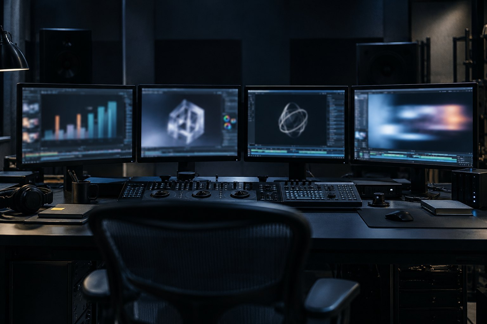

E1 · Gráfico animado
10 minRode o bloco do gráfico.
Pronto quando: ◇ Check passed, render: 0 e OK: 6,0 s · 1920×1080 · 30 fps · sem áudio com saída: 0.
Aula 6 · 15 min
Cada tipo de movimento tem uma biblioteca que resolve em poucas linhas e outra que briga com você. Coreografia de texto é GSAP; gráfico que nasce de dado é D3 desenhando e GSAP animando; cena 3D é Three.js; animação pronta de After Effects é Lottie. Nesta aula você escolhe pela pergunta certa e renderiza um gráfico e uma cena 3D.
Começar a aula
Objetivo: escolher a biblioteca certa para cada peça e renderizar um gráfico de dados com D3 e GSAP.
Clique em cada saída. Várias podem conviver na mesma composição.
Mapa segundo os adaptadores documentados nas skills do HyperFrames (GSAP, Lottie, Three.js, Anime.js, CSS, WAAPI, TypeGPU) em 19/10/2026.
Quatro barras com dados de exemplo. O D3 calcula escala e posição; a timeline faz as barras crescerem em sequência.
<!doctype html>
<html lang="pt-BR">
<head>
<meta charset="UTF-8" />
<meta name="viewport" content="width=1920, height=1080" />
<script src="https://cdn.jsdelivr.net/npm/gsap@3.14.2/dist/gsap.min.js"></script>
<script src="https://cdn.jsdelivr.net/npm/d3@7.9.0/dist/d3.min.js"></script>
<style>
* { margin: 0; padding: 0; box-sizing: border-box; }
html, body { width: 1920px; height: 1080px; overflow: hidden; background: #0c0c10; }
#root { width: 100%; height: 100%; position: relative; font-family: ui-sans-serif, system-ui, sans-serif; }
#titulo { position: absolute; left: 200px; top: 120px; color: #f4f4f5; font-size: 72px; font-weight: 700; line-height: 1.1; }
#nota { position: absolute; left: 200px; top: 220px; color: #a1a1aa; font-size: 36px; }
#grafico { position: absolute; left: 200px; top: 320px; }
.rotulo { fill: #a1a1aa; font-size: 34px; }
.valor { fill: #f4f4f5; font-size: 34px; font-weight: 700; }
</style>
</head>
<body>
<div id="root" data-composition-id="main" data-start="0" data-duration="6" data-width="1920" data-height="1080">
<h1 id="titulo">Planos por cena</h1>
<p id="nota">dados de exemplo, para o ensaio</p>
<svg id="grafico" width="1520" height="600"></svg>
</div>
<script>
// D3 calcula a forma (escalas, posições) uma vez; o GSAP anima no tempo.
const dados = [
{ cena: "Abertura", planos: 4 },
{ cena: "Conflito", planos: 9 },
{ cena: "Virada", planos: 6 },
{ cena: "Fecho", planos: 3 },
];
const svg = d3.select("#grafico");
const x = d3.scaleLinear().domain([0, 10]).range([0, 1100]);
const y = d3.scaleBand().domain(dados.map((d) => d.cena)).range([0, 560]).padding(0.3);
const linha = svg.selectAll("g").data(dados).join("g").attr("transform", (d) => `translate(0,${y(d.cena)})`);
linha.append("text").attr("class", "rotulo").attr("x", 0).attr("y", y.bandwidth() / 2 + 12).text((d) => d.cena);
linha.append("rect").attr("class", "barra").attr("x", 260).attr("height", y.bandwidth()).attr("width", (d) => x(d.planos))
.attr("fill", (d, i) => (i === 1 ? "#e9b949" : "#3f3f47"));
linha.append("text").attr("class", "valor").attr("x", (d) => 260 + x(d.planos) + 20).attr("y", y.bandwidth() / 2 + 12).text((d) => d.planos);
const tl = gsap.timeline({ paused: true });
tl.fromTo("#titulo", { y: 30, opacity: 0 }, { y: 0, opacity: 1, duration: 0.6, ease: "power3.out" }, 0.2);
tl.fromTo("#nota", { opacity: 0 }, { opacity: 1, duration: 0.4 }, 0.6);
tl.fromTo(".rotulo", { opacity: 0 }, { opacity: 1, duration: 0.4, stagger: 0.1 }, 0.8);
tl.fromTo(".barra", { scaleX: 0, transformOrigin: "0% 50%" }, { scaleX: 1, duration: 0.9, ease: "power2.out", stagger: 0.25 }, 1.2);
tl.fromTo(".valor", { opacity: 0 }, { opacity: 1, duration: 0.3, stagger: 0.25 }, 1.9);
window.__timelines["main"] = tl;
</script>
</body>
</html>K=~/projetos/formacao-cinema-ia-motion-v72/kit
export HYPERFRAMES_NO_TELEMETRY=1 NO_COLOR=1
E=${TMPDIR:-/tmp}/ensaio-motion/a6; rm -rf "$E"; mkdir -p "$E"
cp -r "$K/exemplos/a6-dados" "$E/dados"; cd "$E/dados"
npx -y hyperframes@0.8.176 check 2>&1 | grep -E "Check passed|✗"
npx -y hyperframes@0.8.176 render --quality draft --workers 2 --quiet --output dados.mp4 > render.log 2>&1
echo "render: $?"
python3 "$K/conferir.py" dados.mp4 6 1920x1080; echo "saída: $?"◇ Check passed render: 0 OK: 6,0 s · 1920×1080 · 30 fps · sem áudio saída: 0
As duas bibliotecas vêm do CDN com versão fixa (gsap@3.14.2, d3@7.9.0): o render busca na hora de abrir a página, antes do primeiro quadro.
Calcular posição com getBoundingClientRect dentro da animação dá valores diferentes conforme o quadro é pedido, porque o motor renderiza em paralelo. Calcule tudo uma vez, na montagem, como o exemplo faz com as escalas do D3.
Uma forma girando. A rotação vem do tempo do evento hf-seek, nunca do relógio. O ensaio tira a duração da raiz para ver o erro e depois renderiza a versão certa.
<!doctype html>
<html lang="pt-BR">
<head>
<meta charset="UTF-8" />
<meta name="viewport" content="width=1920, height=1080" />
<style>
* { margin: 0; padding: 0; box-sizing: border-box; }
html, body { width: 1920px; height: 1080px; overflow: hidden; background: #0c0c10; }
#root { width: 100%; height: 100%; position: relative; }
#cena3d { position: absolute; inset: 0; width: 1920px; height: 1080px; }
</style>
</head>
<body>
<div id="root" data-composition-id="main" data-no-timeline data-start="0" data-duration="4" data-width="1920" data-height="1080">
<canvas id="cena3d"></canvas>
</div>
<script type="module">
// Three.js no HyperFrames: o quadro vem do tempo que o HyperFrames manda (hf-seek), nunca do relógio.
import * as THREE from "https://cdn.jsdelivr.net/npm/three@0.181.2/+esm";
const canvas = document.getElementById("cena3d");
const renderer = new THREE.WebGLRenderer({ canvas, antialias: true });
renderer.setSize(1920, 1080, false);
renderer.setPixelRatio(1);
const scene = new THREE.Scene();
scene.background = new THREE.Color(0x0c0c10);
const camera = new THREE.PerspectiveCamera(35, 1920 / 1080, 0.1, 100);
camera.position.set(0, 0, 6);
const forma = new THREE.Mesh(
new THREE.IcosahedronGeometry(1.4, 1),
new THREE.MeshStandardMaterial({ color: 0xd4d4d8, roughness: 0.4, flatShading: true })
);
scene.add(forma);
scene.add(new THREE.AmbientLight(0xffffff, 0.4));
const luz = new THREE.DirectionalLight(0xffffff, 2);
luz.position.set(3, 4, 5);
scene.add(luz);
function desenha(t) {
forma.rotation.y = t * 0.8;
forma.rotation.x = t * 0.3;
renderer.render(scene, camera);
}
window.addEventListener("hf-seek", (e) => desenha(e.detail.time));
desenha(window.__hfThreeTime || 0);
</script>
</body>
</html>K=~/projetos/formacao-cinema-ia-motion-v72/kit
export HYPERFRAMES_NO_TELEMETRY=1 NO_COLOR=1
E=${TMPDIR:-/tmp}/ensaio-motion/a6; mkdir -p "$E"
rm -rf "$E/three"; cp -r "$K/exemplos/a6-three" "$E/three"; cd "$E/three"
sed -i 's/ data-duration="4"//' index.html # o erro comum: raiz sem duração
echo "## sem data-duration"; npx -y hyperframes@0.8.176 lint 2>&1 | grep -oE "root_composition_missing_duration_source|[0-9]+ errors?.*"
cp "$K/exemplos/a6-three/index.html" index.html
echo "## com data-duration"; npx -y hyperframes@0.8.176 lint 2>&1 | grep -oE "root_composition_missing_duration_source|[0-9]+ errors?.*"
npx -y hyperframes@0.8.176 render --quality draft --workers 1 --quiet --output three.mp4 > render.log 2>&1
python3 "$K/conferir.py" three.mp4 4 1920x1080; echo "saída: $?"## sem data-duration root_composition_missing_duration_source 1 error(s), 0 warning(s) ## com data-duration 0 errors, 0 warnings OK: 4,0 s · 1920×1080 · 30 fps · sem áudio saída: 0
Sem GSAP, a raiz leva data-no-timeline: no 0.8.176 o lint pede o registro em window.__timelines e aceita esse atributo como "não tenho timeline" (achado no código do lint em 19/10/2026). A documentação da skill cita o atributo para composição parada; aqui a cena se move pelo hf-seek, não por uma timeline.
Dois ensaios e a escolha para as suas peças.
Rode o bloco do gráfico.
Pronto quando: ◇ Check passed, render: 0 e OK: 6,0 s · 1920×1080 · 30 fps · sem áudio com saída: 0.
Rode o bloco do Three.js.
Pronto quando: Sem duração: root_composition_missing_duration_source e 1 error(s); com duração: 0 errors, 0 warnings e OK: 4,0 s · 1920×1080 · 30 fps · sem áudio.
Na cópia /tmp/ensaio-motion/a6/dados, troque a lista dados por quatro números seus (e o título), rode check e render de novo.
Pronto quando: python3 ~/projetos/formacao-cinema-ia-motion-v72/kit/conferir.py dados.mp4 6 1920x1080; echo "saída: $?" → OK: 6,0 s no começo da linha e saída: 0.
A explicação aparece depois da sua resposta.
Pergunta 1 de 3
Um gráfico de vendas por mês, com barras crescendo uma após a outra. Qual combinação?
Pergunta 2 de 3
Por que a composição Three.js precisa de data-duration na raiz?
Pergunta 3 de 3
De onde a cena 3D tira o ângulo de cada quadro?
Escolha uma alternativa. A explicação aparece depois da sua tentativa.